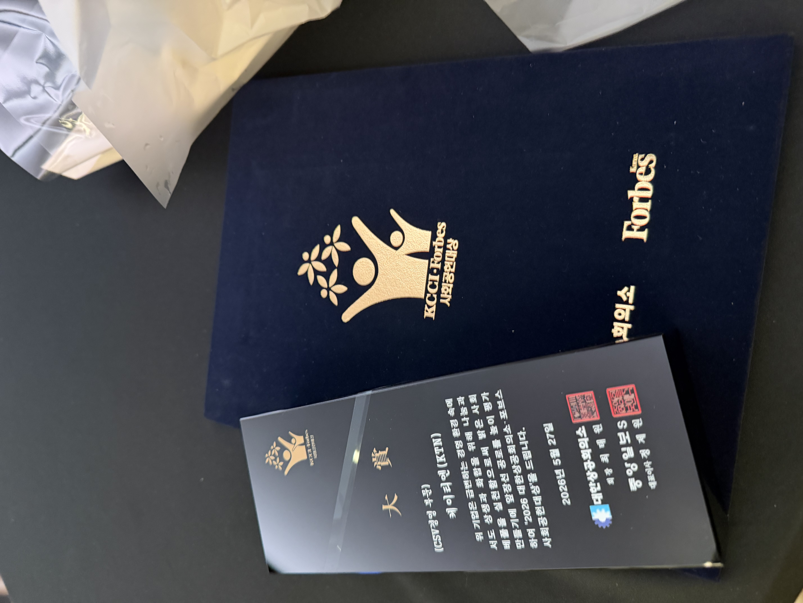
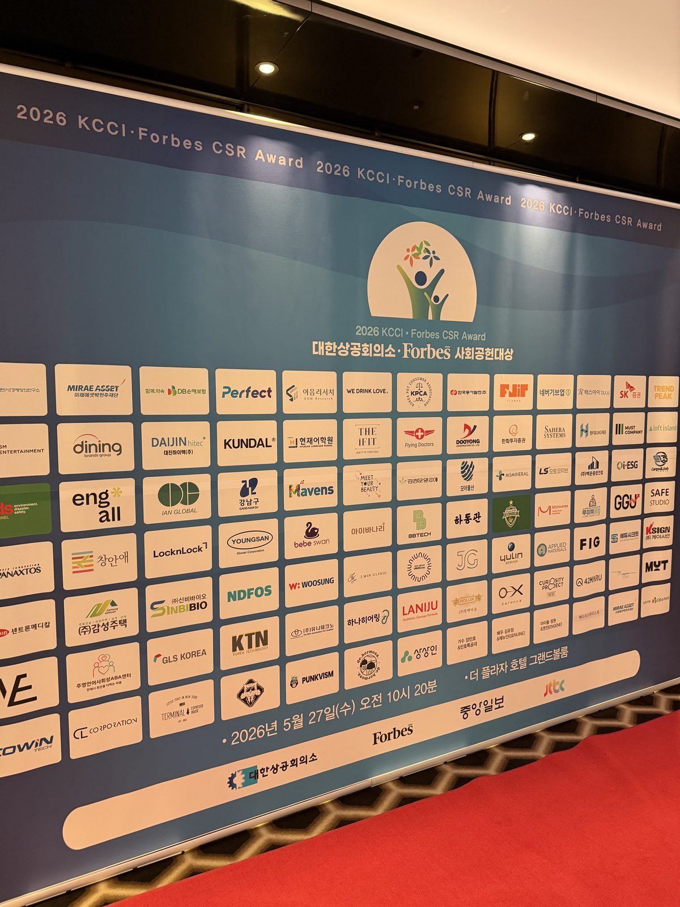

납기일은 코앞인데, 베어링 하나가 라인을 세웁니다
반도체, 화학, 의료기기 현장에 계신 분들이라면 한 번쯤 겪어보셨을 겁니다. 장비 안에서 돌아가던 베어링 하나가 부식되거나 깨져서, 수천만 원짜리 전체 생산 라인이 올스톱되는 상황.
그 순간, "단가 100원 아끼려고 싼 베어링 썼다가…"라는 후회는 이미 늦습니다. 특수 베어링 선택은 단순한 비용 절감의 문제가 아닙니다. 귀사 설비의 수명과 전체 제조 비용(TCO)을 결정짓는 가장 핵심적인 의사결정입니다.
원칙 1. "하청에 재하청?" KTN은 100% 자체 가공으로 거품을 뺐습니다
베어링 임가공 업체를 찾다 보면, 직접 공장이나 CNC 선반을 돌리지 않고 도면만 받아 영세 공장에 하청을 넘기는 속칭 '보따리상'들이 많습니다.
이렇게 되면 필연적으로 중간 마진이 붙어 단가가 올라가고, 미세한 공차 불량이 발생했을 때 책임 소재가 불분명해져 즉각적인 AS가 불가능해집니다.
원칙 2. "어떤 극한 환경도 이겨냅니다" — 맞춤형 특수 소재 솔루션
일반 기성품 베어링은 화학 약품이 닿거나 정전기가 발생하는 특수 환경에서 버티지 못합니다. KTN은 고객사의 작업 환경에 완벽히 들어맞는 최적의 소재를 직접 선별해 가공합니다.
정전기 민감 환경
250℃ 이상 내열
강산·강알칼리
의료·식품 공정
304/316 정밀 금속
이송 롤러·슬라이딩
화학·식품 설비
배관·전기 절연 부품
100% 국산·수입 소재만을 고집하며, 하이테크 베어링기술센터 협력사이자 ±0.001mm 미세 공차까지 완벽하게 잡아내는 기술력으로 납품합니다.
원칙 3. 365일 실시간 소통 — "정확히 언제 도착하는지" 데이터로 말합니다
B2B 제조업에서 납기는 고객사의 생명줄입니다. 부품이 제때 도착하지 않으면 그 피해액은 상상을 초월합니다.
"무조건 빨리 해주겠다"고 말로만 던지는 업체는 피하셔야 합니다. KTN은 365일 언제든 견적 및 맞춤 상담이 가능하며, 현재 재고 현황과 가공 일정을 바탕으로 "정확히 언제 도착하는지" 구체적인 데이터를 제시합니다.
"무작정 단가 견적부터 묻지 마세요. 현장의 '문제'를 먼저 들려주십시오."
저희는 단순히 도면대로 쇠와 플라스틱을 깎아서 던져주는 하청업체가 아닙니다.
기존 베어링의 잦은 마모 원인을 분석하고, 부품의 경량화와 수명 연장을 통해
귀사의 제조 경쟁력을 극대화해 드리는 전문 엔지니어링 파트너입니다.


현재 현장에서 겪고 있는 기술적인 어려움(부식, 소음, 분진, 정전기 문제 등)이 있으신가요? 도면이나 현장 사진과 함께 구체적인 사용 환경을 알려주십시오. 20년 현장 마이스터의 노하우를 바탕으로, 즉시 적용할 수 있는 최적의 특수 소재와 가공 방식을 컨설팅해 드리겠습니다.